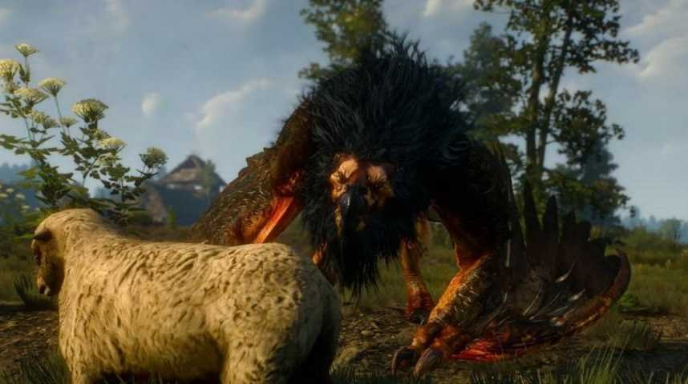

Blanche Fleur est la première région dans laquelle vous commencez. Dans celle-ci, vous trouverez une quête principale ou vous devez abattre un griffon ainsi qu'une multitude de petites quêtes annexes. Dans celle-ci, vous aurez l'occasion d'exp et de vous imerger d'avantage dans le lore.
